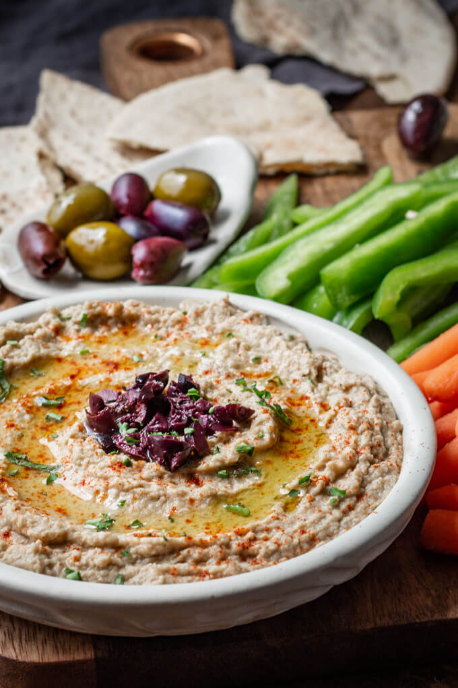

Also known as 'roasted eggplant dip', baba ganoush is a delicious low
carb side dish to any meal.
Recipe courtesy of
lowcarbmaven.com:
Baba ganoush is a Lebanese roasted eggplant dip commonly served as an
appetizer with pita bread. Made from the mashed pulp of charred or
baked eggplant, it’s flavored with tahini, garlic, and olive oil.
Ingredients
- 1 large eggplant, sliced lengthwise
- 1/4 cup greek yoghurt
- 2 tbsp tahini paste
- 2 tsbp extra virgin olive oil
- 1 tbsp lemon juice
- 2 tsp minced garlic (1-2 cloves)
- 1/2 teaspoon ground cumin
- salt and pepper to taste
Instructions
Preparing the eggplant:
-
Preheat oven to 400 degrees F and place oven rack to the middle
position. Line a sheet pan with parchment paper.
-
Slice the eggplant lengthwise, salt well and let sit for 15
minutes to remove the bitter juices. Rinse quickly, then pat dry.
Place the eggplant cut side down and roast 45 minutes or until the
eggplant is completely tender when pierced with a fork. Remove
from the oven and cool
Baba Ganoush:
-
Scoop the soft eggplant pulp from the skin and place into a food
processor. Pulse to break-up. Add the other ingredients and run
the processor until the dip is smooth and creamy.
-
Taste and adjust seasoning. Serve immediately or cover and
refrigerate up to 5 days. It tastes better the next day! Serve at
room temperature or slightly warm. Makes 1 1/2 – 2 cups or 3-4
tbsp per person.
